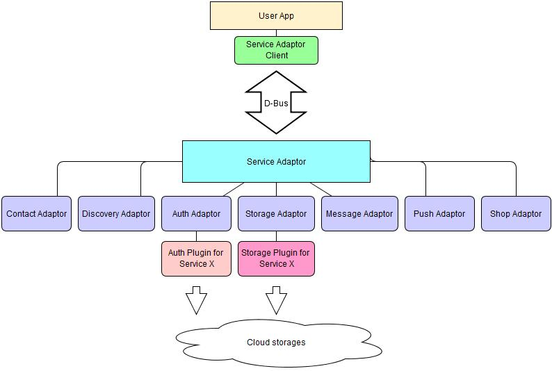

Service Adaptor
Service Adaptor is a set of several adaptors: But main of them are following: Each adaptor is an agent between Service Adaptor Client and according plugins. There exist Auth and Storage Plugins for such services as: Amazon, Box, Dropbox, Gogledrive, Onedrive and Sugarsync. This structure illustrates following figure:Figure: Service Adaptor structure

The main feature of the Service Adaptor is connecting/disconnecting adaptors to Service Adaptor Client via D-Bus.
There are two kinds of path type used in Service Adaptor:
- "Logical path" - means path of "root file system".
It starts from root path(= '/') and you can use this path like linux, e.g. "/folder1/image1.jpg".
- "Physical path" - means specfic uri that be used for cloud server.
Some clouds use same with "Logical path", but some clouds use specfic key or url, e.g. "/" is "ZmNhMWY2MTZlY2M1NDg4OGJmZDY4O", "/folder1" is "2JI32UNJDWQEQWQWEADSSAD".
Auth Adaptor
This adaptor manages authentication plugins.
It allows to:
- get Auth Plugin List
- set Plugin
- request Channel Auth, i.e. service name like "com.serviceadaptor.message", app id, service id (0: contact, 1: free message) and mobile station identification number (IMSI)
Storage Adaptor
This module handles files transfer to/from cloud.
It allows to:
- download a server/thumbnail file and write it to local file
- upload a local file to server path
- request file status
- cancel/pause/resume file transfer
Contact Adaptor
This adaptor manages contacts information in Contact Server, their profiles and service registration information.
It allows to:
- reset contact information in Contact Server and upload native contact information of device to the server
- synchronize native contact information of device with Contact Server according to [type] field of each contact
- get profiles and service registration information of contacts
- set and update device’s profile to server
- upload/delete profile image meta to/from File Server and sets my profile image to Profile Server
- set/get my profile’s privacy levelthe scope of people to be opened
- set my presence ON/OFF information to Presence Server
Discovery Adaptor
It is a future development.
Message Adaptor
This module manages chatting and messaging.
Its main functionality is requesting for:
- Creating Chatroom, Inviting to (or Ending) Chat
- All Unread Messages
- Read or Unseal Message
- Forward Online or Unread Message
- Save Call Log
- Chat ID based on phone number
Push Adaptor
It just receives push notifications from push service.
Shop Adaptor
This module makes requests for:
- List of Items
- Item Information for Download
- Download of Item
- Item Panel URL
How to start plugin?
First we need to create service adaptor:
int service_adaptor_create(service_adaptor_h *service_adaptor);
Than for valid service_adaptor handler we need to iterate to all installed plugins:
int service_adaptor_foreach_plugin(service_adaptor_h service_adaptor,
service_adaptor_plugin_cb callback,
void *user_data);
Inside callback invoked for each plugin we get plugin_uri which is passed to:
int service_adaptor_create_plugin(service_adaptor_h service_adaptor,
const char *plugin_uri,
service_plugin_h *plugin);
And finally we have to request start initialization for service plugin:
int service_plugin_start(service_plugin_h handle,
int service_flag);